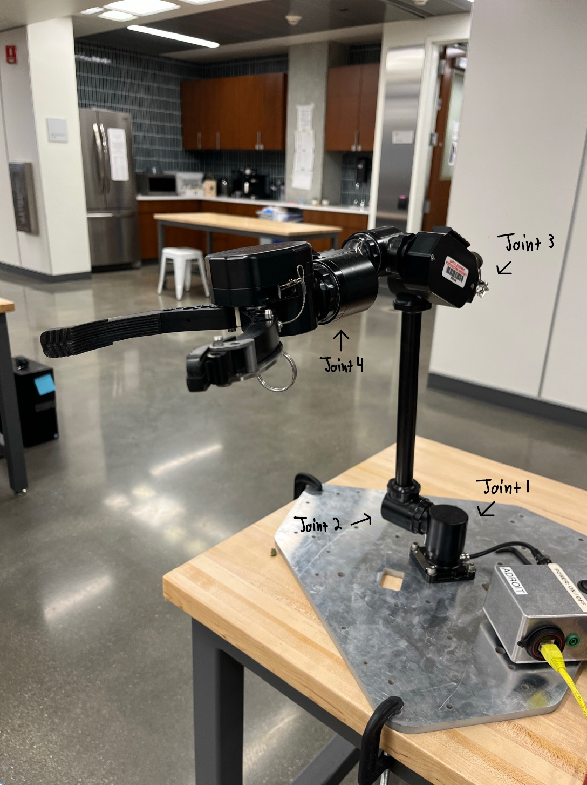
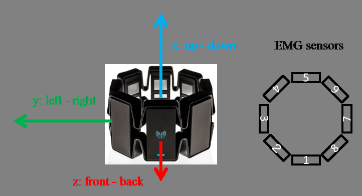
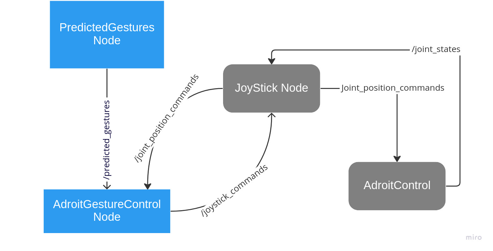

A.R.M - Assitive Robotic Manipulator

Overview
For this project, an Adroit Robotic Arm was used as a teleoperated robotic helper. A Thalmic Labs Myo Armband was used as the controller for the Adroit arm. The armband would go around the user's forearm and read the muscle activity in the form of EMG signals.
These signals were then passed through a gesture classification machine learning model which would map the inputted EMG signals to a specified gesture, such as a fist. These gestures were used to control the end effector of the Adroit.
To make the user have more control of the Adroit's movements, the gyroscope measurements from the IMU of the armband were used to control the position of other Adroit joints. This combination of EMG and IMU inputs gives almost full control of the Adroit arm, and it allowed for the completion
of simple tasks with relative ease for the user.
Here is a video showcasing the basic functionality of the system, including the completion of some more difficult tasks. The video labels the sections that are sped up.
Gesture Recognition Machine Learning Model
The machine learning model used for this project was developed by Robert Schloen using PyTorch, so I will link to his project page here for more details.
The model was trained on data from the Ninapro Database 5, which collected thousands of EMG samples using the same Myo Armbands that Robert and I used. The dataset contains data for many different gestures,
including flexion of each finger, different wrist movements, and different grasps. I ultimately chose to use the same gestures that Robert chose to train on, which included the flexion of the five fingers and a closed fist. This was primarily
because the model was not as accurate when trying to classify different grasp and wrists. Below is a video showing the real time classification of these gestures using the Myo Armband in a Python ROS node.
Here is a video of using these gestures with the Adroit. While I trained 7 gestures, I really only ever use 5: Rest or Open Hand, Fist, Pinky, Ring and Middle. As the video shows, I map the
"Fist" gesture to be a small end effector grip and the "Pinky" to be a larger grasp, "Ring" is used as a recallibration flag, and "Middle" was used to extend a joint not on the gripper.
IMU Control using the Myo
The Myo Armband comes equipped with a nine degreee of freedom IMU. I chose to use the gyroscope data to control the position of certain Adroit Joints. Below is a photo of the Adroit with
the labeled joints that were used, as well as a schematic of the Myo. To control Joint 1, I use the gyroscope data of the z-axis, to control Joint 3, I use the y-axis, and to control Joint 4 I use the x-axis. This
corresponds to the gyroscope changes that occur when the Myo is on the forearm. Trying to control position of joints using gyroscope proved difficult since
the gyroscope measurements began to drift over time, and because the orientation of the Myo would change slighly as it was on the forearm. This was the main
reason to add the recallibration gesture, which stops all control to the Adroit and allows the user to simply realign themselves with the arm and continue
using it. The video showcases this functionality.


Trying to control position of joints using gyroscope proved difficult since
the gyroscope measurements began to drift over time, and because the orientation of the Myo would change slighly as it was on the forearm. This was the main
reason to add the recallibration gesture, which stops all control to the Adroit and allows the user to simply realign themselves with the arm and continue
using it. The video below showcases general control of the Adroit using the IMU as well as the recallibration functionality.
ROS Interface
The Adroit was controlled using ROS 1 Noetic from within a Docker container. The Adroit already had the capabilty of being controlled via an Xbox controller using nodes from previously built packages. To control it with the Myo, I mapped the Xbox buttons and joystick commands to certain Myo gestures or IMU measurements. For example, moving the left joystick to the left would send a command to Joint 1 to move, and so I made it such that the gyroscope readings in the z-axis would act as the left joystick control for left and right movements. Below is a schematic of the ROS nodes and how they interact and interface the Myo with the Adroit. The blue nodes are the new ones corresponding to gesture prediction and IMU control, while the grey are the existing nodes that lay the foundation for interfacing and controlling thr Adroit with an Xbox controller. The Adroit gesture control node would all Myo data, meaning a predicted gesture and IMU stream. It would then act as a game controller by publishing joystick commands to the estabilished joystick node. The joystick node and the main Adroit control node would then send joint commands to the Adroit and recieve back information on the joint positions.
Future Considerations
While this project was successful in allowing for the control of the Adroit, the IMU control required the recallibration gesture due to its eventual inaccuracy. The pose estimation problem that comes with trying to use IMUs to detect the position of an object, in this case the Myo on the forearm, could definitely be looked into more in order to make the control more robust.